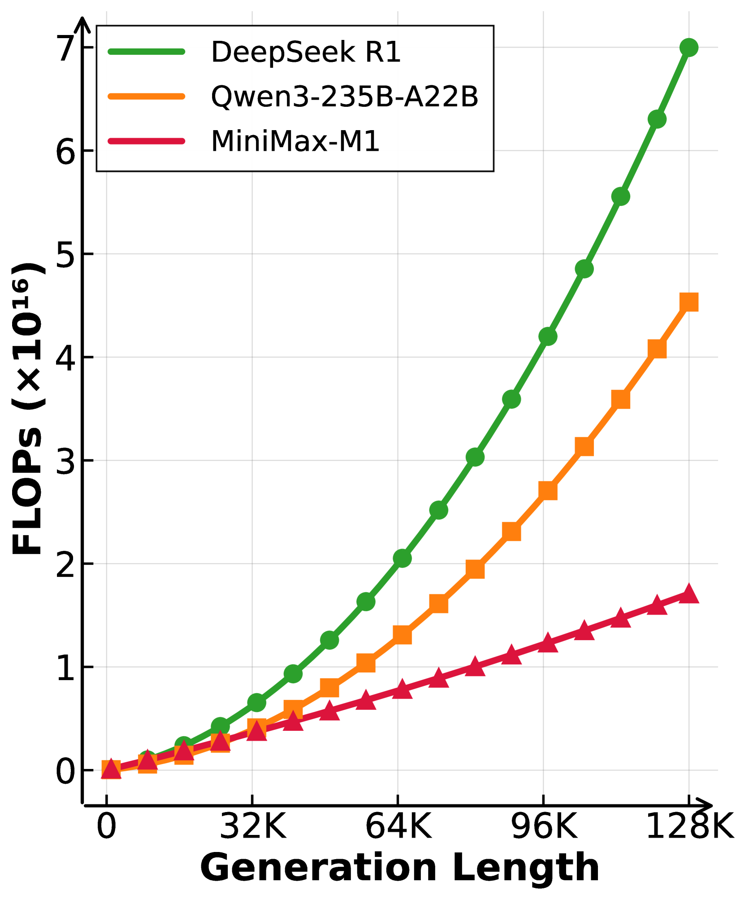
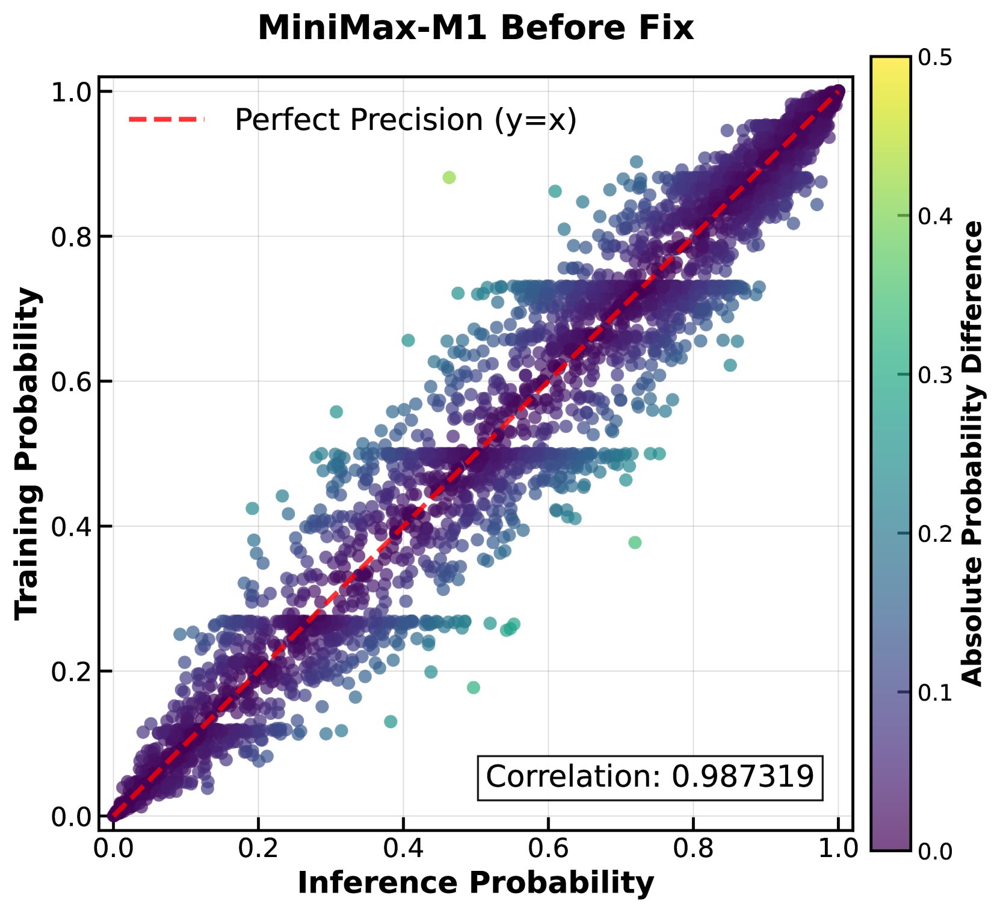
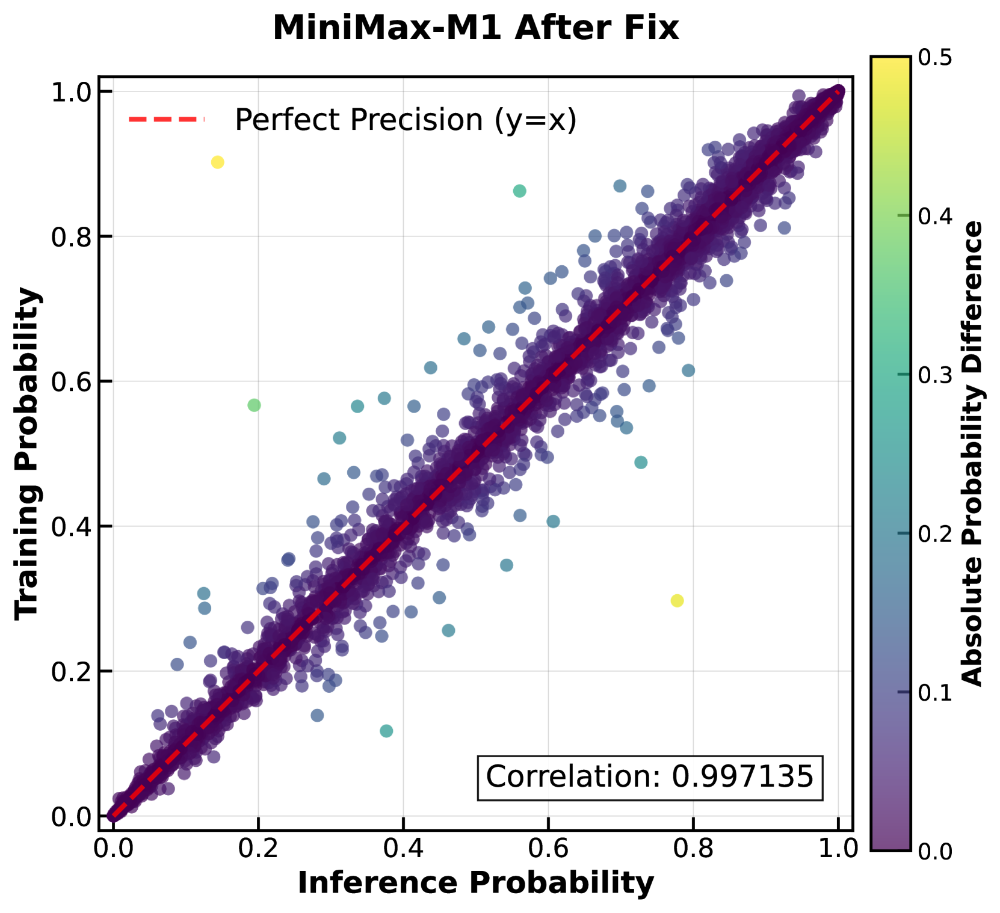

⚡ 一句话总览（TL;DR）
MiniMax-M1 是首个开源的大规模「混合注意力 + MoE」推理模型。它用 Lightning Attention（线性注意力变体）替换掉绝大多数 softmax 注意力，使得「长链思考」的推理算力随生成长度 近似线性增长，而非传统 Transformer 的二次方爆炸。这让又长又多的思维链（CoT）和大规模强化学习都变得便宜得多。 配合新提出的 CISPO 强化学习算法，团队仅用 512 张 H800、3 周、约 53 万美元就跑完了完整 RL， 并原生支持 100 万 token 上下文、8 万 token 生成。
为什么需要这篇论文？
像 OpenAI o1、DeepSeek-R1 这样的大推理模型（LRM），靠「把思考链写得更长 + 大规模强化学习」不断刷高数学、竞赛编程等复杂任务的成绩。 这背后是一个新的扩展维度——测试时算力（test-time compute）：推理时投入越多 FLOPs 去「想得更久」，效果就越好。
但「想得更久」在传统 Transformer 上代价高昂。softmax 注意力的计算复杂度是序列长度的 二次方 O(n²)： 思维链越长，算力和显存开销膨胀得越快。这不仅让推理变贵，更让「边生成长回复、边做 RL」的训练成本难以承受—— 而 RL 阶段恰恰需要模型反复生成越来越长的回复。
学界早有 sparse / linear attention、状态空间模型（SSM）等高效注意力方案，但它们几乎没在大规模推理模型上被真正验证过， 至今有竞争力的 LRM 仍清一色用传统注意力。本文要回答的问题是：
前人怎么做，卡在哪里
点击展开，看每条路线「做了什么、怎么做、卡在哪」。
做了什么：沿用经典 Transformer + softmax 注意力，通过大规模 RL 让模型学会写很长的反思型思维链，从而在奥数、竞赛编程上大幅提升。
怎么做：全程 full softmax attention，每个 token 都与之前所有 token 做注意力；上下文与生成长度受限（DeepSeek-R1-0528 最大输入 128K、输出 64K）。
卡在哪：注意力是 O(n²) 复杂度。思维链越长，单步推理 FLOPs、显存、RL rollout 成本都急剧上升，成为「测试时算力扩展」的天花板。
做了什么：用 sparse attention、linear attention、状态空间模型、线性 RNN 等替换 softmax，把复杂度从二次降到近线性，让长序列更便宜。
怎么做：各种近似或线性化注意力计算；但绝大多数只在中小规模或非推理任务上做过实验。
卡在哪：这些方案「尚未在大规模推理模型上充分验证」，几乎没有有竞争力的 LRM 采用。唯一的例外 Hunyuan-T1 用了 Mamba 架构，但不开源、披露细节极少。MiniMax-M1 正是要填补这块空白：把高效注意力真正做进一个开源、能打的大推理模型。
MiniMax-M1 怎么做
整体可分为两层创新：① 架构层——混合 Lightning Attention + MoE，让长生成天然高效； ② 训练层——CISPO 强化学习算法 + 一系列稳定 RL 的工程配方。先看从底座到成品的总流水线。
① 架构：Lightning Attention 混合 MoE
M1 的核心是「7 + 1」混合注意力：每 7 个使用 Lightning Attention（一种 I/O 感知、线性复杂度的线性注意力实现）的 transnormer 块， 才插入 1 个常规 softmax 注意力块。绝大部分计算因此变成线性，少量 softmax 块则保留对精确全局检索的能力。 模型整体是 MoE：456B 总参数、45.9B 激活、32 个专家。
- 为什么 7:1：大部分上下文交互交给线性的 Lightning Attention 处理，省下绝大多数算力；周期性的 softmax 块补回精确长距离检索能力。
- 效果：长生成时 FLOPs 近似线性增长，天然适合「想得很长」。
- RL 友好：RL 的瓶颈常在 rollout（生成）算力与延迟，线性注意力让大规模 RL 也跑得动。
下面这张原文图直接量化了这种效率优势——这是全文最关键的「为什么高效」证据。

- 横轴 = 生成长度（0→128K tokens），纵轴 = 推理 FLOPs（×10¹⁶）：衡量「生成这么长的回复」要花多少算力。
- 绿线 DeepSeek-R1（全 softmax 注意力）：曲线明显上凸，呈二次方增长，生成越长涨得越陡。
- 橙线 Qwen3-235B-A22B：同为传统注意力，增长同样超线性，居中。
- 红线 MiniMax-M1（Lightning 混合注意力）：几乎是一条直线，近似线性增长——这正是 Lightning Attention 的价值所在。
- 差距随长度拉大：原文给出，64K 生成长度时 M1 用不到 R1 的 50% FLOPs；100K 时约只用 25%。
- 一句话总结：三条线起点接近，但越往右越分叉——M1 把「长思考」的边际成本压到了近线性，使长 CoT 与大规模 RL 在经济上可行。
② CISPO：不丢 token 的强化学习算法
RL 阶段团队发现：直接用 GRPO/PPO 会「误伤」最关键的反思 token。像 However、 Wait、 Aha、 Recheck 这些充当「推理分叉点」的词，在底座模型里概率很低，于是更新时重要性采样权重 r 会很大， 第一次 on-policy 更新后就被裁剪（clip）掉，再也参与不了后续的 off-policy 梯度更新。 可这些低概率 token 恰恰对稳定熵、维持探索、可扩展 RL 至关重要。
CISPO（Clipped IS-weight Policy Optimization）的解法很巧：不再裁剪 token 的梯度，而是裁剪「重要性采样权重」本身， 并用类 REINFORCE 的目标保留每个 token 的对数似然梯度。下面切换两个视角对比。
在 Qwen2.5-32B-base 的 zero-RL 对照实验（AIME 2024）中，CISPO 在相同训练步数下明显领先 GRPO/DAPO，并仅用约 50% 步数就追平 DAPO。
把大规模 RL 真正跑稳的工程配方
作为「第一个在这种混合架构上做大规模 RL」的团队，作者踩了不少独有的坑。最关键的一个，是训练与推理之间的数值精度不匹配。


- 每个点 = 一个 token；横轴是推理（生成）时算出的概率，纵轴是训练时重算的概率，红色虚线是「完美一致」的 y=x。
- 颜色 = 两个概率的绝对差：越偏黄绿，偏差越大；越偏深紫，越一致。
- 左图（修复前，相关系数 0.987）：出现明显的水平条带与偏离对角线的散点——这就是训练/推理 kernel 的精度失配，会直接阻止 reward 增长，RL 训不动。
- 根因：逐层排查发现，输出层 LM head 的高幅激活在低精度下放大了误差；有趣的是，小型稠密 softmax 模型并不会出现这个问题。
- 右图（修复后，相关系数 0.997）：把 LM 输出头精度提升到 FP32 后，散点紧贴对角线、条带消失，两个本应相等的概率重新对齐，reward 才能稳定上涨。
- 一句话总结：在大混合注意力模型上，一个看似不起眼的输出头精度，决定了整个 RL 能不能学起来。
病态重复会带来巨大梯度、威胁稳定。规则：连续 3000 个 token 概率都 >0.99 即提前截断，既防崩溃又提升吞吐。
梯度幅度横跨 1e-18~1e-5（多数 <1e-14）。弃用 VeRL 默认值，改用 AdamW β1=0.9、β2=0.95、eps=1e-15 才收敛。
生成式奖励模型偏爱长回复，易诱发「灌水换高分」的 reward hacking。对策：训练中在线监控长度偏置并及时重校准。
扩窗时负样本比正样本更快撞上下文上限，后段累积过大负梯度致模式崩溃。用 sample+token 级混合损失、降裁剪阈值等缓解。
RL 训练数据构成 — 展开看可验证 / 不可验证两类环境的数据量
- 数学推理：近 50K 高质量竞赛级题，pass@10 严格落在 0~0.9 之间筛选，规则校验答案。
- 逻辑推理：用 SynLogic 框架合成 41 类任务（密码、数独等）约 53K 条，难度随训练动态上调。
- 竞赛编程：30K 条，缺测试用例的题用模型自动补全测试套件。
- 软件工程：仿 SWE-bench 构建容器化沙盒，真实执行代码、以测试通过/失败作为奖励，数千条样本。
- 通用领域：25K 条用生成式奖励模型（GenRM）打分，含有/无标准答案两类，pairwise 比较打 −1/0/+1。
- 课程式混合：先纯「可验证推理任务」，再逐步混入通用任务，防止灾难性遗忘。
它到底有多强
综合来看，MiniMax-M1 跻身世界最强开源模型之列，整体超越此前的开源 LRM（原版 DeepSeek-R1、Qwen3-235B）， 尤其在软件工程、智能体工具使用、长上下文这些贴近真实场景的任务上优势明显（以下为 M1-80k 分数）。
测试时算力扩展确实有效：把生成上限从 40K 扩到 80K（M1-80k）后，在复杂数学与代码任务上进一步超过 M1-40k。 RL 训练过程中，AIME 2024 准确率从 68% 一路涨到 80%，且回复长度与准确率同步增长——印证了「想得更长 → 推得更准」。
也有短板：在最纯粹的数学/代码竞赛上，M1 略逊于最新的 DeepSeek-R1-0528；但在更现实的工具使用与长上下文理解上达到相当甚至更优的水平。 作者把 M1 定位为面向真实世界、需要长输入与多轮长推理的智能体底座。